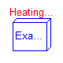
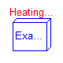
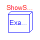
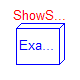
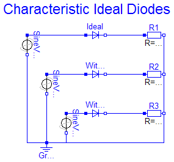
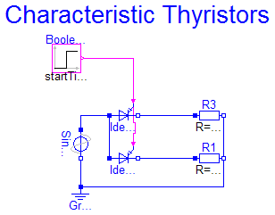
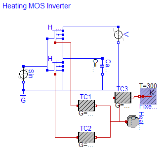
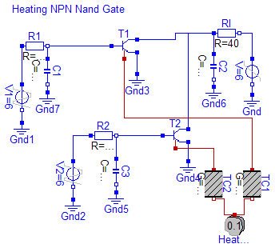
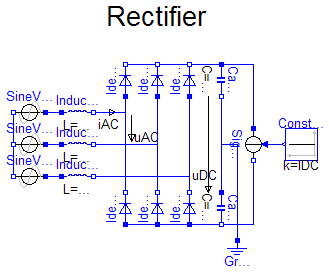
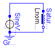

 



This package contains examples for the analog electrical package.
| Name | Description |
|---|---|
| CauerFilter | CAUER Switched Capacitor Filter |
| CharacteristicIdealDiodes | Characteristic of ideal diodes |
| CharacteristicThyristors | Characteristic of ideal thyristors |
| ChuaCircuit | Chua's circuit, ns, V, A |
| DifferenceAmplifier | |
| HeatingMOSInverter | Heating MOS Inverter |
| HeatingNPN_OrGate | Heating NPN Or Gate |
| HeatingRectifier | Heating rectifier |
| NandGate | CMOS NAND Gate (see Tietze/Schenk, page 157) |
| Rectifier | B6 diode bridge |
| ShowSaturatingInductor | Simple demo to show behaviour of SaturatingInductor component |
| ShowVariableResistor | Simple demo of a VariableResistor model |
| Utilities | Utilities for examples |
Modelica.Electrical.Analog.Examples.CauerFilter

The example Cauer Filter is a low-pass-filter of the fifth order. It is realized using a switched-capacitor network. The voltage source V is the input voltage, and the Op5.p2.v is the filter output voltage. The pulse response is calculated.
The simulation end time should be 2e5. Please plot the output voltage Op5.p2.v.
encapsulated model CauerFilter "CAUER Switched Capacitor Filter"
import Modelica.Electrical.Analog.Basic;
import Modelica.Electrical.Analog.Sources;
import Modelica.Electrical.Analog.Examples.Utilities;
import Modelica.Icons;
extends Icons.Example;
Sources.TrapezoidVoltage V(
V=1,
startTime=499,
rising=1,
width=1500,
falling=1,
period=50000,
nperiod=1);
Sources.TrapezoidVoltage Clk(
V=5,
rising=5,
width=500,
falling=5,
period=1000);
Basic.Capacitor C1(
C=1);
Basic.Capacitor C2(
C=1.55);
Basic.Capacitor C3(
C=1.527);
Basic.Capacitor C4(
C=1);
Basic.Capacitor C5(
C=1);
Basic.Capacitor C6(
C=1.018);
Basic.Capacitor C7(
C=1);
Basic.Capacitor C8(
C=1.644);
Basic.Capacitor C9(
C=2);
Basic.Capacitor C10(
C=1);
Basic.Capacitor C11(
C=2);
Basic.Capacitor C12(
C=1);
Basic.Capacitor C13(
C=9.862);
Basic.Capacitor C14(
C=7.23);
Basic.Capacitor C15(
C=10.06);
Basic.Capacitor C16(
C=10.23);
Basic.Capacitor C17(
C=12.76);
Basic.Capacitor C18(
C=8.676);
Utilities.RealSwitch S1;
Utilities.RealSwitch S2;
Utilities.RealSwitch S3;
Utilities.RealSwitch S4;
Utilities.RealSwitch S5;
Utilities.RealSwitch S6;
Utilities.RealSwitch S7;
Utilities.RealSwitch S8;
Utilities.RealSwitch S9;
Utilities.RealSwitch S10;
Utilities.RealSwitch S11;
Utilities.RealSwitch S12;
Utilities.RealSwitch S13;
Utilities.RealSwitch S14;
Utilities.RealSwitch S15;
Utilities.RealSwitch S16;
Utilities.RealSwitch S17;
Utilities.RealSwitch S18;
Basic.VCV Op1(
gain=30000);
Basic.VCV Op2(
gain=30000);
Basic.VCV Op3(
gain=30000);
Basic.VCV Op4(
gain=30000);
Basic.VCV Op5(
gain=30000);
Basic.Ground G;
Basic.Ground M;
equation
connect(S1.n1, V.p);
connect(C8.p, C18.n);
connect(C8.p, S11.n1);
connect(C8.p, S17.n1);
connect(C8.p, Op5.p2);
connect(C2.p, C13.p);
connect(C2.p, C16.n);
connect(C2.p, S7.n1);
connect(C2.p, S13.n1);
connect(C2.p, Op3.p2);
connect(C6.p, C14.n);
connect(C6.p, S1.n2);
connect(C6.p, S5.n1);
connect(C6.p, Op1.p2);
connect(C15.n, S9.n2);
connect(C15.n, S3.n1);
connect(C15.n, Op2.p2);
connect(C14.p, C2.n);
connect(C14.p, S2.n2);
connect(C14.p, S4.n1);
connect(C14.p, Op1.n1);
connect(C15.p, S6.n2);
connect(C15.p, S8.n2);
connect(C15.p, Op2.n1);
connect(C16.p, C6.n);
connect(C16.p, C8.n);
connect(C16.p, S10.n2);
connect(C16.p, Op3.n1);
connect(C17.p, S12.n1);
connect(C17.p, S14.n1);
connect(C17.p, Op4.n1);
connect(C18.p, C13.n);
connect(C18.p, S16.n1);
connect(C18.p, S18.n1);
connect(C18.p, Op5.n1);
connect(C17.n, S15.n2);
connect(C17.n, S17.n2);
connect(C17.n, S9.n1);
connect(C17.n, Op4.p2);
connect(C1.n, S2.p);
connect(C3.p, S3.p);
connect(C3.n, S4.p);
connect(C4.p, S5.p);
connect(C4.n, S6.p);
connect(C5.p, S7.p);
connect(C5.n, S8.p);
connect(C7.p, S9.p);
connect(C7.n, S10.p);
connect(C9.p, S11.p);
connect(C9.n, S12.p);
connect(C10.p, S13.p);
connect(C10.n, S14.p);
connect(C11.p, S15.p);
connect(C11.n, S16.p);
connect(C12.p, S17.p);
connect(C12.n, S18.p);
connect(C1.p, S1.p);
connect(S1.control, Clk.p);
connect(S2.control, Clk.p);
connect(S3.control, Clk.p);
connect(S4.control, Clk.p);
connect(S5.control, Clk.p);
connect(S6.control, Clk.p);
connect(S7.control, Clk.p);
connect(S8.control, Clk.p);
connect(S9.control, Clk.p);
connect(S10.control, Clk.p);
connect(S11.control, Clk.p);
connect(S12.control, Clk.p);
connect(S13.control, Clk.p);
connect(S14.control, Clk.p);
connect(S15.control, Clk.p);
connect(S16.control, Clk.p);
connect(S17.control, Clk.p);
connect(S18.control, Clk.p);
connect(G.p, V.n);
connect(G.p, S3.n2);
connect(G.p, S4.n2);
connect(G.p, S5.n2);
connect(G.p, S7.n2);
connect(G.p, S11.n2);
connect(G.p, S12.n2);
connect(G.p, S13.n2);
connect(G.p, S14.n2);
connect(G.p, S16.n2);
connect(G.p, S18.n2);
connect(G.p, S2.n1);
connect(G.p, S6.n1);
connect(G.p, S8.n1);
connect(G.p, S10.n1);
connect(G.p, S15.n1);
connect(M.p, Op1.p1);
connect(M.p, Op2.p1);
connect(M.p, Op3.p1);
connect(M.p, Op4.p1);
connect(M.p, Op5.p1);
connect(M.p, Op1.n2);
connect(M.p, Op2.n2);
connect(M.p, Op3.n2);
connect(M.p, Op4.n2);
connect(M.p, Op5.n2);
connect(M.p, Clk.n);
/*1*/
/*2*/
/*3*/
/*4*/
/*5*/
/*6*/
/*7*/
/*8*/
/*9*/
/*10*/
/*11*/
/*12*/
/*13*/
/*14*/
/*15*/
/*16*/
/*17*/
/*18*/
/*19*/
/*20*/
/*21*/
/*22*/
/*23*/
/*24*/
/*25*/
/*26*/
/*27*/
/*28*/
/*29*/
/*CL*/
/*G*/
end CauerFilter;

Three examples of ideal diodes are shown:
the totally ideal diode (Ideal) with all parameters to be zero
the nearly ideal diode with Roff=0.1 and Gon=0.1
the nearly ideal but displaced diode with Vknee=5 and Roff=0.1 and
Gon=0.1
The resistance and conductance are chosen untypically high since the slopes should
be seen in the graphics.
Simulate until T=1 s.
Plot in separate windows:
Ideal.i versus Ideal.v
With_Roff_Gon.i versus With_Roff_Gon.v
With_Roff_Gon_Vknee.i versus With_Roff_Gon_Vknee.v
Release Notes:
model CharacteristicIdealDiodes "Characteristic of ideal diodes"
extends Modelica.Icons.Example;
Modelica.Electrical.Analog.Ideal.IdealDiode Ideal(
Roff=0,
Gon=0);
Modelica.Electrical.Analog.Ideal.IdealDiode With_Roff_Gon(
Roff=0.1, Gon=0.1);
Modelica.Electrical.Analog.Ideal.IdealDiode With_Roff_Gon1_Vknee(
Vknee=5,
Roff=0.2,
Gon=0.2);
Modelica.Electrical.Analog.Sources.SineVoltage SineVoltage1(
V=10,
offset=-9);
Modelica.Electrical.Analog.Basic.Ground Ground1;
Modelica.Electrical.Analog.Basic.Resistor R1(
R=1.e-3);
Modelica.Electrical.Analog.Basic.Resistor R2(
R=1.e-3);
Modelica.Electrical.Analog.Basic.Resistor R3(
R=1.e-3);
Modelica.Electrical.Analog.Sources.SineVoltage SineVoltage2(
V=10,
offset=0);
Modelica.Electrical.Analog.Sources.SineVoltage SineVoltage3(
V=10,
offset=0);
equation
connect(Ground1.p, SineVoltage1.n);
connect(Ideal.n, R1.p);
connect(With_Roff_Gon.n, R2.p);
connect(With_Roff_Gon1_Vknee.n, R3.p);
connect(R1.n, R2.n);
connect(R2.n, R3.n);
connect(R3.n, Ground1.p);
connect(SineVoltage2.p, Ideal.p);
connect(SineVoltage2.n, Ground1.p);
connect(SineVoltage1.p, With_Roff_Gon.p);
connect(With_Roff_Gon1_Vknee.p, SineVoltage3.p);
connect(SineVoltage3.n, Ground1.p);
end CharacteristicIdealDiodes;
Modelica.Electrical.Analog.Examples.CharacteristicThyristors
Two examples of thyristors are shown:
the ideal thyristor
and the ideal GTO thyristor with Vknee=5
Simulate until T=2 s.
Plot in separate windows:
IdealThyristor1.i and IdealGTOThyristor1.i
IdealThyristor1.v and IdealGTOThyristor1.v
Release Notes:
model CharacteristicThyristors "Characteristic of ideal thyristors"
extends Modelica.Icons.Example;
Modelica.Electrical.Analog.Ideal.IdealThyristor IdealThyristor1(
Vknee=5);
Modelica.Electrical.Analog.Sources.SineVoltage SineVoltage1(
V=10,
offset=0);
Modelica.Electrical.Analog.Basic.Ground Ground1;
Modelica.Electrical.Analog.Basic.Resistor R3(
R=1.e-3);
Modelica.Blocks.Sources.BooleanStep BooleanStep1(
startValue=false,
startTime=1.25);
Modelica.Electrical.Analog.Ideal.IdealGTOThyristor IdealGTOThyristor1(
Vknee=0);
Modelica.Electrical.Analog.Basic.Resistor R1(
R=1.e-3);
equation
connect(IdealThyristor1.n, R3.p);
connect(Ground1.p, SineVoltage1.n);
connect(SineVoltage1.p, IdealThyristor1.p);
connect(BooleanStep1.y, IdealThyristor1.fire);
connect(IdealGTOThyristor1.n, R1.p);
connect(R3.n, R1.n);
connect(R1.n, Ground1.p);
connect(IdealGTOThyristor1.p, IdealThyristor1.p);
connect(IdealGTOThyristor1.fire, IdealThyristor1.fire);
end CharacteristicThyristors;
Modelica.Electrical.Analog.Examples.ChuaCircuit

Chua's circuit is the most simple nonlinear circuit which shows chaotic behaviour. The circuit consists of linear basic elements (capacitors, resistor, conductor, inductor), and one nonlinear element, which is called Chua's diode. The chaotic behaviour is simulated.
The simulation end time should be set to 5e4. To get the chaotic behaviour please plot C1.v. Choose C2.v as the independent variable.
encapsulated model ChuaCircuit "Chua's circuit, ns, V, A"
import Modelica.Electrical.Analog.Basic;
import Modelica.Electrical.Analog.Examples.Utilities;
import Modelica.Icons;
extends Icons.Example;
Basic.Inductor L(
L=18);
Basic.Resistor Ro(
R=12.5e-3);
Basic.Conductor G(
G=0.565);
Basic.Capacitor C1(
C=10, v(start=4));
Basic.Capacitor C2(
C=100);
Utilities.NonlinearResistor Nr(
Ga(min=-1) = -0.757576,
Gb(min=-1) = -0.409091,
Ve=1);
Basic.Ground Gnd;
equation
connect(L.p, G.p);
connect(G.n, Nr.p);
connect(Nr.n, Gnd.p);
connect(C1.p, G.n);
connect(L.n, Ro.p);
connect(G.p, C2.p);
connect(C1.n, Gnd.p);
connect(C2.n, Gnd.p);
connect(Ro.n, Gnd.p);
end ChuaCircuit;
Modelica.Electrical.Analog.Examples.DifferenceAmplifier
It is a simple NPN transistor amplifier circuit. The voltage difference between R1.p and R3.n is amplified. The output signal is the voltage between R2.n and R4.n. In this example the voltage at V1 is amplified because R3.n is grounded.
The simulation end time should be set to 1e- 8. Please plot the input voltage V1.v, and the output voltages R2.n.v, and R4.n.v.
encapsulated model DifferenceAmplifier
import Modelica.Electrical.Analog.Basic;
import Modelica.Electrical.Analog.Sources;
import Modelica.Electrical.Analog.Examples.Utilities;
import Modelica.Icons;
extends Icons.Example;
Sources.ExpSineVoltage V1(
V=0.2,
freqHz=0.2e9,
damping=0.1e8);
Sources.RampVoltage V2(
V=15, duration=1e-9);
Sources.RampCurrent I1(
I=0.16, duration=1e-9);
Basic.Resistor R1(
R=0.0001);
Basic.Resistor R2(
R=100);
Basic.Resistor R3(
R=0.0001);
Basic.Resistor R4(
R=100);
Basic.Capacitor C1(
C=1e-10);
Basic.Capacitor C4(
C=1e-10);
Basic.Capacitor C5(
C=1e-10);
Basic.Capacitor C2(
C=1e-10);
Basic.Capacitor C3(
C=1e-10);
Basic.Ground Gnd1;
Basic.Ground Gnd9;
Basic.Ground Gnd3;
Basic.Ground Gnd2;
Basic.Ground Gnd6;
Basic.Ground Gnd7;
Basic.Ground Gnd8;
Basic.Ground Gnd5;
Basic.Ground Gnd4;
Utilities.Transistor Transistor1;
Utilities.Transistor Transistor2;
equation
connect(V1.n, Gnd1.p);
connect(C1.n, Gnd2.p);
connect(I1.n, Gnd7.p);
connect(C5.n, Gnd8.p);
connect(C3.n, Gnd5.p);
connect(R3.n, Gnd4.p);
connect(C2.n, Gnd3.p);
connect(C4.p, Gnd6.p);
connect(I1.p, C5.p);
connect(R1.p, V1.p);
connect(R2.p, V2.p);
connect(R4.p, V2.p);
connect(V2.n, Gnd9.p);
connect(R1.n, Transistor1.b);
connect(Transistor1.b, C1.p);
connect(Transistor1.c, C2.p);
connect(R2.n, Transistor1.c);
connect(Transistor1.e, I1.p);
connect(Transistor2.b, R3.p);
connect(Transistor2.b, C3.p);
connect(C4.n, Transistor2.c);
connect(R4.n, Transistor2.c);
connect(C5.p, Transistor2.e);
end DifferenceAmplifier;
Modelica.Electrical.Analog.Examples.HeatingMOSInverter
The heating MOS inverter shows a heat flow always if a transistor is leading.
Simulate until T=5 s.
Plot in separate windows:
Sin.p.v and Capacitor1.p.v
HeatCapacitor1.port.T and H_PMOS.heatPort.T and H_NMOS.heatPort.T
H_PMOS.heatPort.Q_flow and H_NMOS.heatPort.Q_flow
Release Notes:
model HeatingMOSInverter "Heating MOS Inverter"
extends Modelica.Icons.Example;
Modelica.Electrical.Analog.Basic.Ground G;
Modelica.Electrical.Analog.Sources.SineVoltage Sin(
V=5);
Modelica.Electrical.Analog.Basic.Capacitor Capacitor1(
C=0.00001);
Modelica.Thermal.HeatTransfer.HeatCapacitor HeatCapacitor1(
C=0.01);
Modelica.Thermal.HeatTransfer.ThermalConductor TC1(
G=0.01);
Semiconductors.HeatingPMOS H_PMOS;
Semiconductors.HeatingNMOS H_NMOS;
Modelica.Electrical.Analog.Sources.RampVoltage V(
V=5, duration=1.e-2);
Modelica.Thermal.HeatTransfer.ThermalConductor TC2(
G=0.01);
Modelica.Thermal.HeatTransfer.FixedTemperature FixedTemperature1(
T=
300);
Modelica.Thermal.HeatTransfer.ThermalConductor TC3(
G=0.01);
equation
connect(Sin.n, G.p);
connect(Capacitor1.n, G.p);
connect(H_NMOS.G, H_PMOS.G);
connect(H_NMOS.G, Sin.p);
connect(H_PMOS.S, H_NMOS.D);
connect(H_NMOS.D, Capacitor1.p);
connect(H_NMOS.B, H_NMOS.S);
connect(H_NMOS.S, G.p);
connect(H_PMOS.B, H_PMOS.D);
connect(V.p, H_PMOS.D);
connect(V.n, G.p);
connect(TC1.port_b, HeatCapacitor1.port);
connect(TC2.port_b, HeatCapacitor1.port);
connect(TC1.port_a, H_PMOS.heatPort);
connect(TC2.port_a, H_NMOS.heatPort);
connect(TC3.port_b, FixedTemperature1.port);
connect(TC3.port_a, HeatCapacitor1.port);
end HeatingMOSInverter;

The heating NPN nand gate shows a heat flow always if a transistor is leading.
Simulate until T=200 s.
Plot in separate windows:
V1.v and V2.v and C2.v
HeatCapacitor1.port.T and T1.heatPort.T and T2.heatPort.T
T1.heatPort.Q_flow and T2.heatPort.Q_flow
Release Notes:
model HeatingNPN_OrGate "Heating NPN Or Gate"
extends Modelica.Icons.Example;
constant Real CapVal=0;
Modelica.Thermal.HeatTransfer.HeatCapacitor HeatCapacitor1(
C=0.1);
Modelica.Thermal.HeatTransfer.ThermalConductor TC1(
G=0.01);
Modelica.Thermal.HeatTransfer.ThermalConductor TC2(
G=0.01);
Modelica.Electrical.Analog.Sources.RampVoltage V(
V=6, duration=5);
Modelica.Electrical.Analog.Sources.TrapezoidVoltage V1(
V=6,
startTime=55,
rising=5,
width=15,
falling=5,
period=50,
nperiod=10);
Modelica.Electrical.Analog.Sources.TrapezoidVoltage V2(
V=6,
startTime=65,
rising=5,
width=15,
falling=5,
period=50,
nperiod=10);
Modelica.Electrical.Analog.Basic.Resistor R1(
R=1800);
Modelica.Electrical.Analog.Basic.Resistor R2(
R=1800);
Modelica.Electrical.Analog.Basic.Resistor RI(
R=40);
Modelica.Electrical.Analog.Basic.Ground Gnd;
Modelica.Electrical.Analog.Basic.Ground Gnd1;
Modelica.Electrical.Analog.Basic.Ground Gnd2;
Modelica.Electrical.Analog.Basic.Ground Gnd3;
Modelica.Electrical.Analog.Basic.Ground Gnd4;
Modelica.Electrical.Analog.Basic.Capacitor C1(
C=CapVal);
Modelica.Electrical.Analog.Basic.Capacitor C2(
C=CapVal);
Modelica.Electrical.Analog.Basic.Capacitor C3(
C=CapVal);
Modelica.Electrical.Analog.Basic.Ground Gnd5;
Modelica.Electrical.Analog.Basic.Ground Gnd6;
Modelica.Electrical.Analog.Basic.Ground Gnd7;
Semiconductors.HeatingNPN T1(
Bf=100,
Br=1,
Is=1.e-14,
Vak=0,
Tauf=0,
Taur=0,
Ccs=CapVal,
Cje=CapVal,
Cjc=CapVal,
Phie=1,
Me=0.5,
Phic=1,
Mc=0.5,
Gbc=1.e-12,
Gbe=1.e-12,
EMax=40);
Semiconductors.HeatingNPN T2(
Bf=100,
Br=1,
Is=1.e-14,
Vak=0,
Tauf=0,
Taur=0,
Ccs=CapVal,
Cje=CapVal,
Cjc=CapVal,
Phie=1,
Me=0.5,
Phic=1,
Mc=0.5,
Gbc=1.e-12,
Gbe=1.e-12,
EMax=40);
equation
connect(Gnd1.p, V1.n);
connect(V1.p, R1.p);
connect(RI.n, V.p);
connect(Gnd.p, V.n);
connect(V2.p, R2.p);
connect(Gnd2.p, V2.n);
connect(Gnd7.p, C1.n);
connect(C2.p, RI.p);
connect(Gnd6.p, C2.n);
connect(C3.p, R2.n);
connect(C1.p, R1.n);
connect(Gnd5.p, C3.n);
connect(T1.B, R1.n);
connect(T1.E, Gnd3.p);
connect(RI.p, T1.C);
connect(T2.B, R2.n);
connect(T2.E, Gnd4.p);
connect(T2.C, RI.p);
connect(TC1.port_b, HeatCapacitor1.port);
connect(TC2.port_b, HeatCapacitor1.port);
connect(TC2.port_a, T2.heatPort);
connect(TC1.port_a, T1.heatPort);
end HeatingNPN_OrGate;
Modelica.Electrical.Analog.Examples.HeatingRectifier

The heating rectifier shows a heat flow always if the electrical capacitor is loaded.
Simulate until T=5 s.
Plot in separate windows:
SineVoltage1.v and Capacitor1.p.v
HeatCapacitor1.port.T and HeatingDiode1.heatPort.T
HeatingDiode1.heatPort.Q_flow
Release Notes:
model HeatingRectifier "Heating rectifier"
extends Modelica.Icons.Example;
Modelica.Electrical.Analog.Semiconductors.HeatingDiode HeatingDiode1;
Modelica.Electrical.Analog.Basic.Ground G;
Modelica.Electrical.Analog.Sources.SineVoltage SineVoltage1;
Modelica.Electrical.Analog.Basic.Capacitor Capacitor1;
Modelica.Thermal.HeatTransfer.HeatCapacitor HeatCapacitor1(
C=1);
Modelica.Thermal.HeatTransfer.ThermalConductor ThermalConductor1(
G=10);
Modelica.Electrical.Analog.Basic.Resistor R(
R=1);
equation
connect(SineVoltage1.p, HeatingDiode1.p);
connect(SineVoltage1.n, G.p);
connect(Capacitor1.n, G.p);
connect(HeatingDiode1.n, Capacitor1.p);
connect(HeatingDiode1.heatPort, ThermalConductor1.port_a);
connect(ThermalConductor1.port_b, HeatCapacitor1.port);
connect(R.p, Capacitor1.p);
connect(R.n, Capacitor1.n);
end HeatingRectifier;
Modelica.Electrical.Analog.Examples.NandGate

The nand gate is a basic CMOS building block. It consists of four CMOS transistors. The output voltage Nand.y.v is low if and only if the two input voltages at Nand.x1.v and Nand.x2.v are both high. In this way the nand functionality is realized.
The simulation end time should be set to 1e-7. Please plot the input voltages Nand.x1.v, d Nand.x2.v, and the output voltage Nand.y.v.
encapsulated model NandGate
"CMOS NAND Gate (see Tietze/Schenk, page 157)"
import Modelica.Electrical.Analog.Basic;
import Modelica.Electrical.Analog.Sources;
import Modelica.Electrical.Analog.Examples.Utilities;
import Modelica.Icons;
extends Icons.Example;
Sources.TrapezoidVoltage VIN1(
V=3.5,
startTime=20e-9,
rising=1e-9,
width=19e-9,
falling=1.e-9,
period=40e-9);
Sources.TrapezoidVoltage VIN2(
V=3.5,
startTime=10e-9,
rising=1e-9,
width=19e-9,
falling=1.e-9,
period=40e-9);
Sources.RampVoltage VDD(
V=5, duration=1e-9);
Basic.Ground Gnd1;
Basic.Ground Gnd4;
Basic.Ground Gnd5;
Utilities.Nand Nand;
equation
connect(VDD.n, Gnd1.p);
connect(VIN1.n, Gnd4.p);
connect(VIN2.n, Gnd5.p);
connect(Nand.Vdd, VDD.p);
connect(VIN1.p, Nand.x1);
connect(VIN2.p, Nand.x2);
end NandGate;
Modelica.Electrical.Analog.Examples.Rectifier
The rectifier example shows a B6 diode bridge fed by a three phase sinusoidal voltage, loaded by a DC current.
DC capacitors start at ideal no-load voltage, thus making easier initial transient.
Simulate until T=0.1 s.
Plot in separate windows:
uDC ... DC-voltage
iAC ... AC-currents 1..3
uAC ... AC-voltages 1..3 (distorted)
Try different load currents iDC = 0..approximately 500 A.
You may watch Losses (of the whole diode bridge) trying different diode parameters.
Release Notes:
| Name | Default | Description |
|---|---|---|
| VAC | 400 | RMS line-to-line [V] |
| f | 50 | line frequency [Hz] |
| LAC | 60E-6 | line inductor [H] |
| Roff | 1E-3 | diode forward resistance [Ohm] |
| Gon | 1E-3 | diode backward conductance [S] |
| Vknee | 2 | diode threshold voltage [V] |
| CDC | 15E-3 | DC capacitance [F] |
| IDC | 500 | load current [A] |
model Rectifier "B6 diode bridge"
extends Modelica.Icons.Example;
import Modelica.Electrical.Analog.Ideal;
parameter Modelica.SIunits.Voltage VAC = 400 "RMS line-to-line";
parameter Modelica.SIunits.Frequency f = 50 "line frequency";
parameter Modelica.SIunits.Inductance LAC = 60E-6 "line inductor";
parameter Modelica.SIunits.Resistance Roff = 1E-3 "diode forward resistance";
parameter Modelica.SIunits.Conductance Gon = 1E-3 "diode backward conductance";
parameter Modelica.SIunits.Voltage Vknee = 2 "diode threshold voltage";
parameter Modelica.SIunits.Capacitance CDC = 15E-3 "DC capacitance";
parameter Modelica.SIunits.Current IDC = 500 "load current";
output Modelica.SIunits.Voltage uDC;
output Modelica.SIunits.Current iAC[ 3];
output Modelica.SIunits.Voltage uAC[ 3];
output Modelica.SIunits.Power Losses;
Modelica.Electrical.Analog.Sources.SineVoltage SineVoltage1(
freqHz=f,
V=VAC*sqrt(2/3));
Modelica.Electrical.Analog.Sources.SineVoltage SineVoltage2(
freqHz=f,
phase=-2/3*Modelica.Constants.pi,
V=VAC*sqrt(2/3));
Modelica.Electrical.Analog.Sources.SineVoltage SineVoltage3(
freqHz=f,
phase=-4/3*Modelica.Constants.pi,
V=VAC*sqrt(2/3));
Modelica.Electrical.Analog.Basic.Inductor Inductor1(
L=LAC);
Modelica.Electrical.Analog.Basic.Inductor Inductor2(
L=LAC);
Modelica.Electrical.Analog.Basic.Inductor Inductor3(
L=LAC);
Ideal.IdealDiode IdealDiode1(
Roff=Roff,
Gon=Gon,
Vknee=Vknee);
Ideal.IdealDiode IdealDiode2(
Roff=Roff,
Gon=Gon,
Vknee=Vknee);
Ideal.IdealDiode IdealDiode3(
Roff=Roff,
Gon=Gon,
Vknee=Vknee);
Ideal.IdealDiode IdealDiode4(
Roff=Roff,
Gon=Gon,
Vknee=Vknee);
Ideal.IdealDiode IdealDiode5(
Roff=Roff,
Gon=Gon,
Vknee=Vknee);
Ideal.IdealDiode IdealDiode6(
Roff=Roff,
Gon=Gon,
Vknee=Vknee);
Modelica.Electrical.Analog.Basic.Capacitor Capacitor1(
C=2*CDC);
Modelica.Electrical.Analog.Basic.Capacitor Capacitor2(
C=2*CDC);
Modelica.Electrical.Analog.Basic.Ground Ground1;
Modelica.Electrical.Analog.Sources.SignalCurrent SignalCurrent1;
Modelica.Blocks.Sources.Constant Constant1(
k=IDC);
initial equation
Capacitor1.v = VAC*sqrt(2)/2;
Capacitor2.v = VAC*sqrt(2)/2;
equation
uDC = Capacitor1.v + Capacitor2.v;
iAC = {Inductor1.i,Inductor2.i,Inductor3.i};
uAC[1] = Inductor1.n.v - Inductor2.n.v;
uAC[2] = Inductor2.n.v - Inductor3.n.v;
uAC[3] = Inductor3.n.v - Inductor1.n.v;
Losses = IdealDiode1.v*IdealDiode1.i + IdealDiode2.v*IdealDiode2.i +
IdealDiode3.v*IdealDiode3.i + IdealDiode4.v*IdealDiode4.i +
IdealDiode5.v*IdealDiode5.i + IdealDiode6.v*IdealDiode6.i;
connect(SineVoltage1.n, SineVoltage2.n);
connect(SineVoltage2.n, SineVoltage3.n);
connect(SineVoltage1.p, Inductor1.p);
connect(SineVoltage2.p, Inductor2.p);
connect(SineVoltage3.p, Inductor3.p);
connect(IdealDiode1.p, IdealDiode4.n);
connect(IdealDiode2.p, IdealDiode5.n);
connect(IdealDiode3.p, IdealDiode6.n);
connect(IdealDiode1.n, IdealDiode2.n);
connect(IdealDiode2.n, IdealDiode3.n);
connect(IdealDiode4.p, IdealDiode5.p);
connect(IdealDiode5.p, IdealDiode6.p);
connect(Capacitor2.n, IdealDiode6.p);
connect(IdealDiode3.n, Capacitor1.p);
connect(Capacitor1.n, Capacitor2.p);
connect(Capacitor2.p, Ground1.p);
connect(Capacitor1.p, SignalCurrent1.p);
connect(SignalCurrent1.n, Capacitor2.n);
connect(Constant1.y, SignalCurrent1.i);
connect(Inductor1.n, IdealDiode1.p);
connect(Inductor2.n, IdealDiode2.p);
connect(Inductor3.n, IdealDiode3.p);
end Rectifier;

| Name | Default | Description |
|---|---|---|
| Lzer | 2 | [H] |
| Lnom | 1 | [H] |
| Inom | 1 | [A] |
| Linf | 0.5 | [H] |
| U | 1.25 | [V] |
| f | 1/(2*Modelica.Constants.pi) | [Hz] |
| phase | Modelica.Constants.pi/2 | [rad] |
model ShowSaturatingInductor
"Simple demo to show behaviour of SaturatingInductor component"
extends Modelica.Icons.Example;
parameter Modelica.SIunits.Inductance Lzer = 2;
parameter Modelica.SIunits.Inductance Lnom = 1;
parameter Modelica.SIunits.Current Inom = 1;
parameter Modelica.SIunits.Inductance Linf = 0.5;
parameter Modelica.SIunits.Voltage U = 1.25;
parameter Modelica.SIunits.Frequency f = 1/(2*Modelica.Constants.pi);
parameter Modelica.SIunits.Angle phase = Modelica.Constants.pi/2;
output Modelica.SIunits.Voltage v;
output Modelica.SIunits.Current i;
Modelica.Electrical.Analog.Sources.SineVoltage SineVoltage1(
V=U,
phase=phase,
freqHz=f);
Modelica.Electrical.Analog.Basic.Ground Ground1;
Modelica.Electrical.Analog.Basic.SaturatingInductor SaturatingInductance1(
Lzer=Lzer,
Lnom=Lnom,
Inom=Inom,
Linf=Linf);
equation
v=SaturatingInductance1.v;
i=SaturatingInductance1.i;
connect(SineVoltage1.n, Ground1.p);
connect(SineVoltage1.n, SaturatingInductance1.n);
connect(SaturatingInductance1.p, SineVoltage1.p);
end ShowSaturatingInductor;
Modelica.Electrical.Analog.Examples.ShowVariableResistor

It is a simple test circuit for the VariableResistor. The VariableResistor sould be compared with R2.
Simulate until T=1 s.
Release Notes:
model ShowVariableResistor "Simple demo of a VariableResistor model"
extends Modelica.Icons.Example;
Modelica.Electrical.Analog.Basic.VariableResistor VariableResistor;
Modelica.Electrical.Analog.Basic.Ground Ground1;
Modelica.Electrical.Analog.Basic.Ground Ground2;
Modelica.Electrical.Analog.Basic.Resistor R1;
Modelica.Electrical.Analog.Basic.Resistor R2;
Modelica.Electrical.Analog.Basic.Resistor R3;
Modelica.Electrical.Analog.Basic.Resistor R4;
Modelica.Electrical.Analog.Basic.Resistor R5;
Modelica.Electrical.Analog.Sources.SineVoltage SineVoltage1;
Modelica.Blocks.Sources.Ramp Ramp1(
height=5, offset=2);
equation
connect(R1.n, R2.p);
connect(R2.n, R3.p);
connect(R4.n, VariableResistor.p);
connect(VariableResistor.n, R5.p);
connect(R3.n, Ground2.p);
connect(Ground2.p, R5.n);
connect(SineVoltage1.p, Ground1.p);
connect(SineVoltage1.n, R1.p);
connect(SineVoltage1.n, R4.p);
connect(Ramp1.y, VariableResistor.R);
end ShowVariableResistor;